My dear friend the UWaterloo duck again volunteered to take my place. Kept saying something about biometric identification data should not be on the open internet due to deepfake impersonation and other cybersecurity concerns ? Anyway, I start with a 9x9 box filter and finite difference operators, using the custom convolution function generate some convolutions as can be seen below.
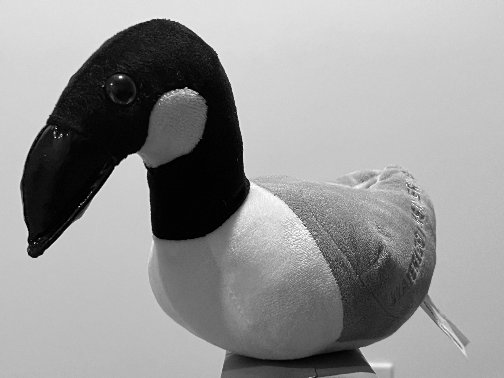
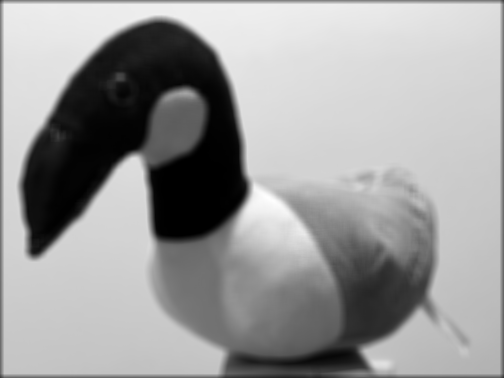
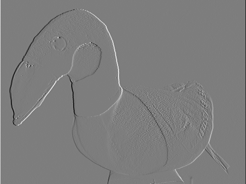
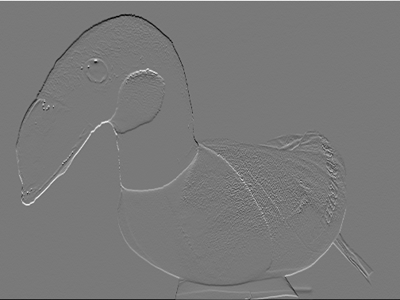
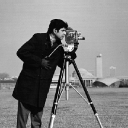
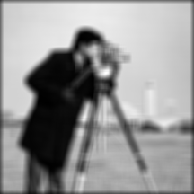
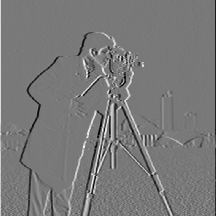
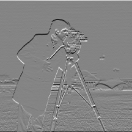
import numpy as np
def image_convolution_x4_forloops(image, kernel):
kernel_height, kernel_width = kernel.shape
image_height, image_width = image.shape
output_height = image_height - kernel_height + 1
output_width = image_width - kernel_width + 1
output = np.zeros((output_height, output_width))
for i in range(output_height):
for j in range(output_width):
region = image[i:i+kernel_height, j:j+kernel_width]
sum = 0
for m in range(kernel_height):
for n in range(kernel_width):
sum += region[m, n] * kernel[m, n]
output[i, j] = sum
return outputdef image_convolution(image, kernel, padding = (0,0)):
if padding != (0,0):
image = np.pad(image, ((padding[0], padding[0]), (padding[1], padding[1])), mode='constant', constant_values=0)
kernel = kernel[::-1, ::-1] # Flip the kernel for convolution
kernel_height, kernel_width = kernel.shape
image_height, image_width = image.shape
output_height = image_height - kernel_height + 1
output_width = image_width - kernel_width + 1
output = np.zeros((output_height, output_width))
for i in range(output_height):
for j in range(output_width):
region = image[i:i+kernel_height, j:j+kernel_width]
output[i, j] = np.sum(region * kernel)
return outputThe runtime for the scipy convolution function is found to be quite a lot faster than the one manually coded above. This is attributed to the backend optimizations for faster parallelized processing in the scipy library.
The horizontal and vertical derivatives give the gradient magnitude. Here I use a threshold of 80 to form the binary image. At higher or lower values I found that either the edges were not strong enough to cross the threshold or the derivative noise started showing up in the thresholded image. The magnitude is calculated with a simple L2 norm.
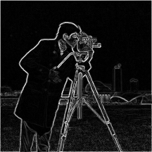
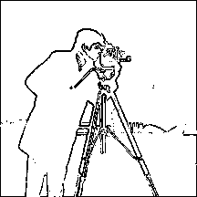
Now lets compare differentiating the original image with differentiating a Gaussian-blurred version.
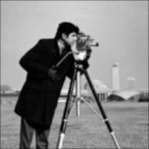
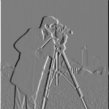
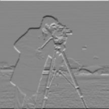
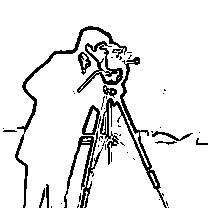
The Gaussian can also be combined with each derivative operator before filtering the image.
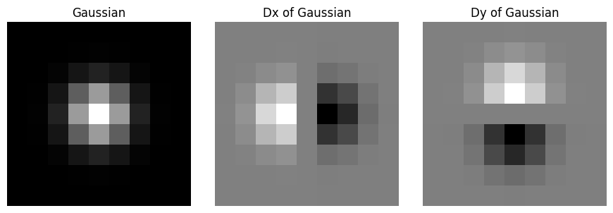
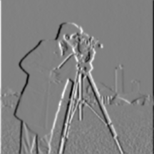
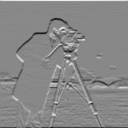
Since the convolution operation is associative, we find that first blurring the image and then applying the difference operator is equivalent to applying the difference operator to the blurring filter and then applying the combined Derivative of Gaussians (DoG) filter to the image. The results look visually identical like above
Since the constraint here is to not use any built in angle function, we need to get a little creative. Interestingly there is a somewhat similar clarke transformation used in electrical machine 3-Phase AC analysis to convert 3 waveforms 120 degrees out of phase with each other to a representation that is 90 degrees from each other or at right angles. And looking at the cyclical color wheel we can apply a similar mapping to the dx, -dx, dy and -dy values on this wheel. And we know that interpolant colors are simply combinations of rgb, this gives us a good mapping from dx and dy axes to the full color wheel.
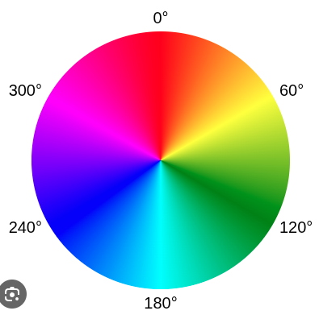
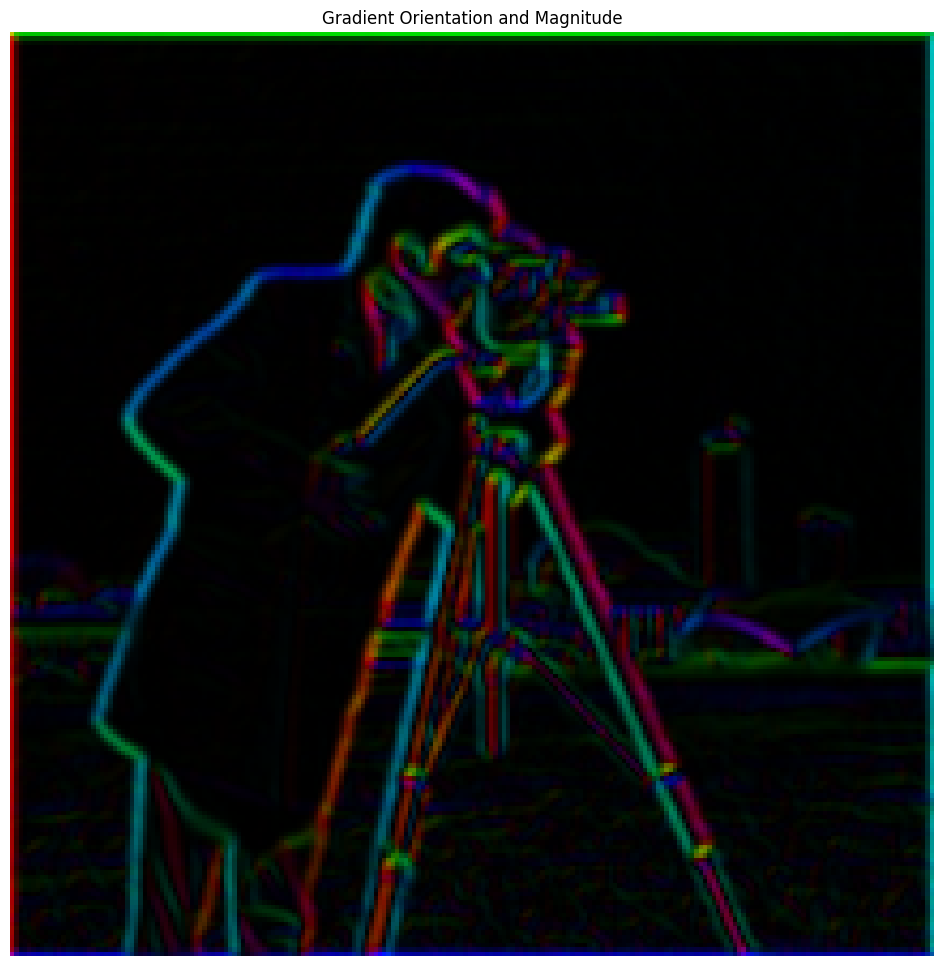
To develop the unsharp filter as described in the document, we can first derive the formula of the combined filter. Using an impulse response filter when unity multiplication is needed to separate the sharpening and blurring components together into a single filter
# Derivation
# I_blur = I * K
# I_high = I - I_blur
# I_sharp = I + sharpening_factor * I_high
# I_sharp = I + sharpening_factor * ( I - I * K)
# I_sharp = I * [( 1 + sharpening_factor) x Impulse - sharpening_factor x K )Using the Taj Mahal and Ziggurat images to compare the original, blurred, high frequency, and sharpened results.
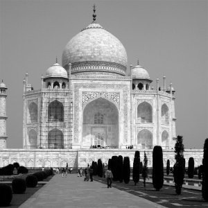
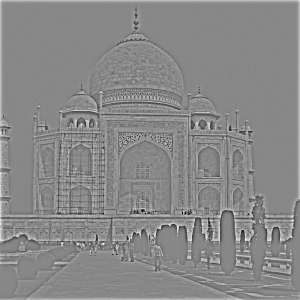
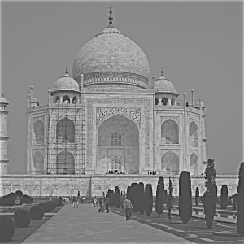
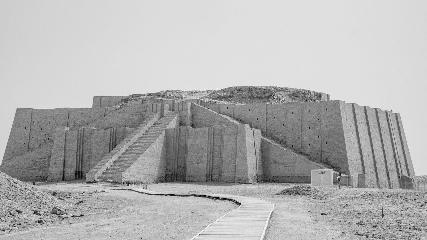
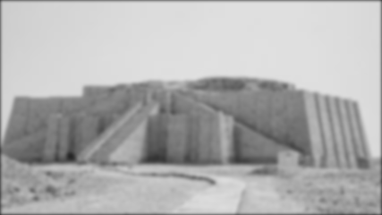
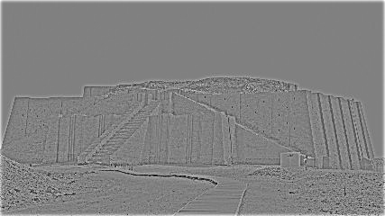
Now lets blur a sharp image and try sharpening it again.
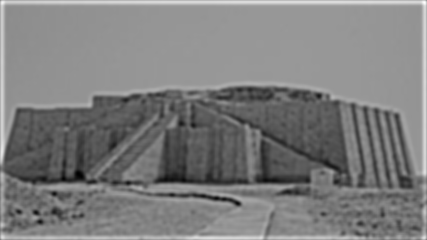
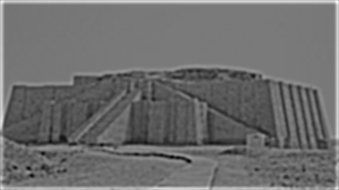
After resharpening, it does look like some of the detail is recovered but increasing it past a certain threshold does not produce better results. This is likely due to the fact that once the high frequency is removed, amplifying the remaining high frequency components does not fully recover the original frequency that were filtered out.
For this section, we try to first align the two images using some python code in the align_coords.py file. For each of these images I also crop it to center the image on the face and remove as much of the edge artifacts due to alignment so they do not overwhelm the convolution.
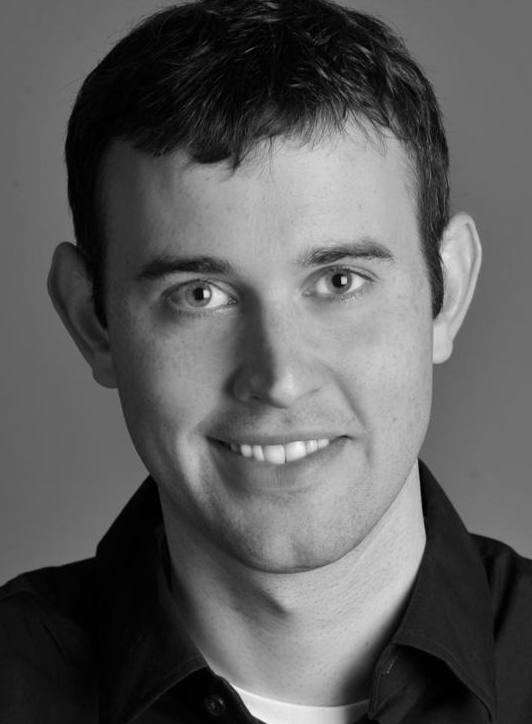
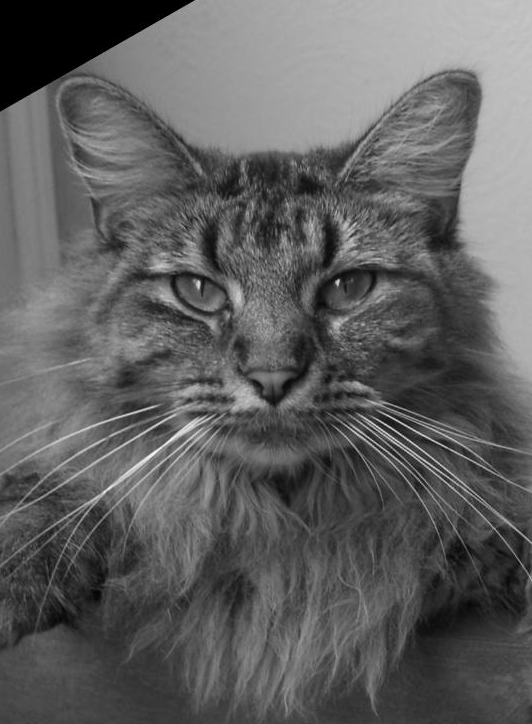
Review the frequency plots of the images, it is notable that the high pass filter still shows some data in in the low frequency region of the. High sigma values remove more of the high frequency components. So by some iteration and selecting a low pass sigma 10 and high pass sigma 4, we ensure that there is some frequency gap in between that can allow for the far/near image visualization behavior.
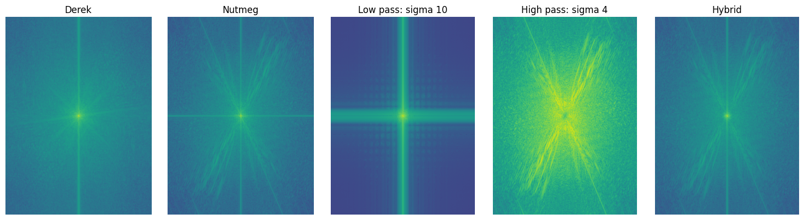
The frequency plots below use the final hybrid settings: low pass sigma 10 and high pass sigma 4.
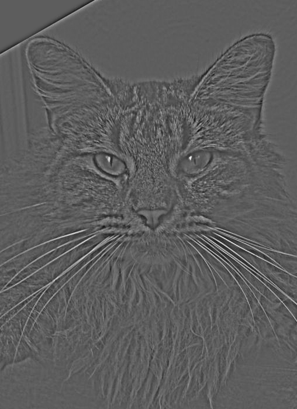
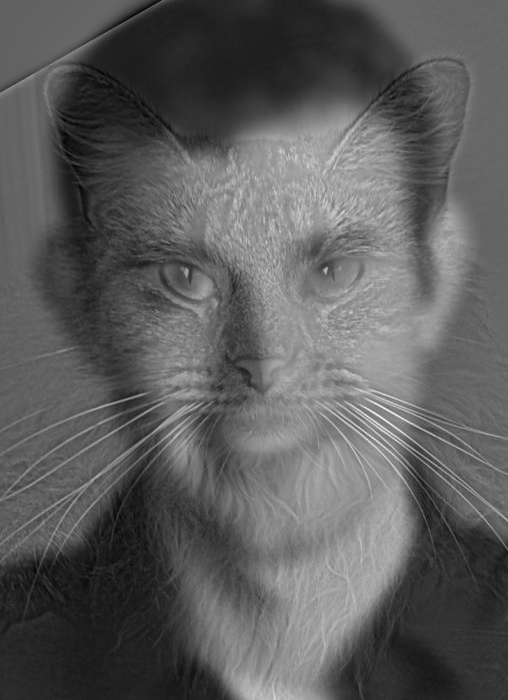
We try two more hybrids. First the spidermonkey
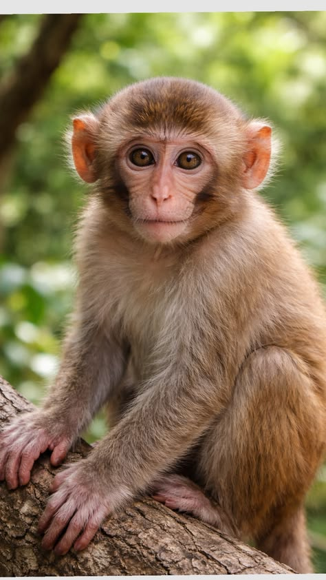
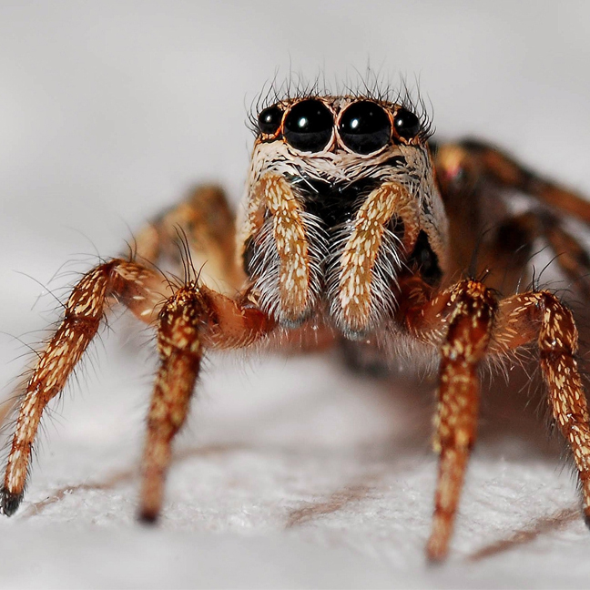
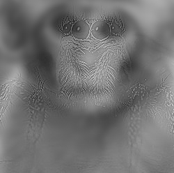
And then a combination of batman and ironman, also known as man-man. Bat-Iron if you'd like
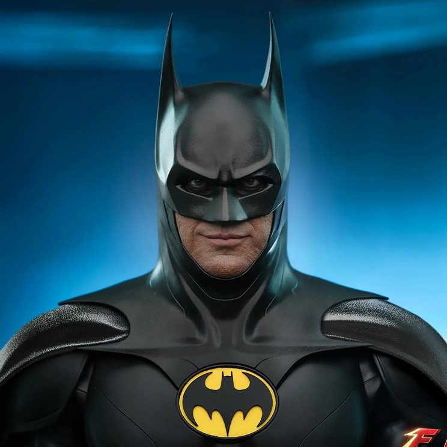
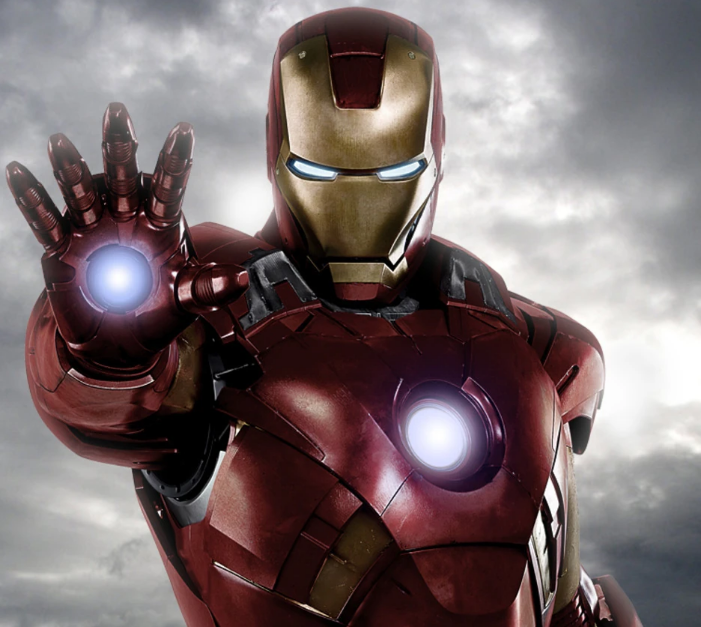
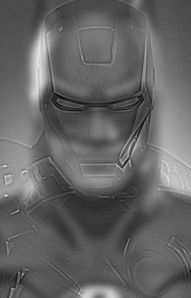
For these results again the sigma values were adjusted based on the frequency components in the images to ensure the visual effect stays consistent.
Here I compare Derek in color with Nutmeg in grayscale, the reverse combination, and both images in color. Whats notable here is that the color in low frequency is nearly identical to both in color. So the color in the sharp portion does not really impact the final output, this is likely due to the fact that most color is contained within the body of the image, and the high frequency removal consequently also removes the color from the images.
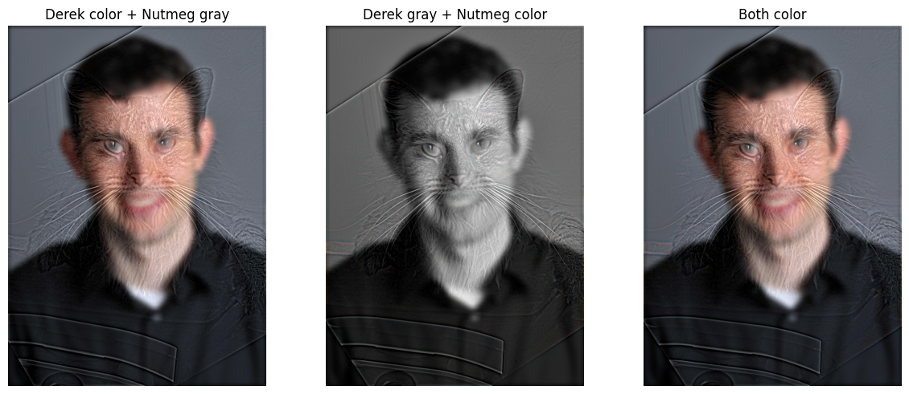
Following the algorithm as in the linked paper we construct Gaussian and Laplacian stacks. Each gaussian level is more blurred and Laplacian levels store differences between adjacent Gaussian levels by approximating the second derivative with a difference of gaussians. The final blurred image retained for reconstruction. The stacks for the orange and the apple look as follows.
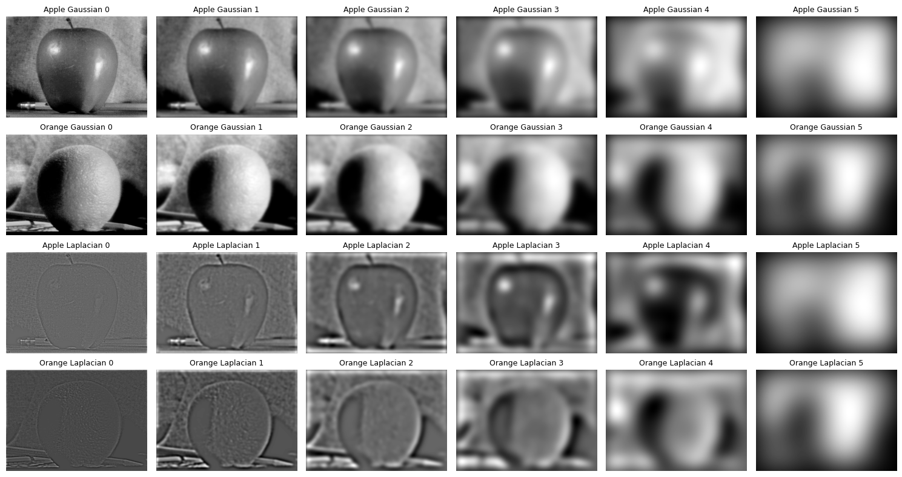
By creating a mask for each channel of an RGB image and blending each separately we obtain the following colored oraple image. Each mask is also blended with the same gaussian stack to create a smooth seam for a weighted combination of two images. Without this blurring I noticed that the seams were very sharp and not nearly as smooth of a transition across them.
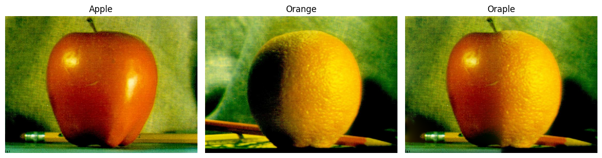
Recreating the figure 3.42 from the paper by visualizing contributions at levels 0, 2, and 4, followed by the reconstructed result.
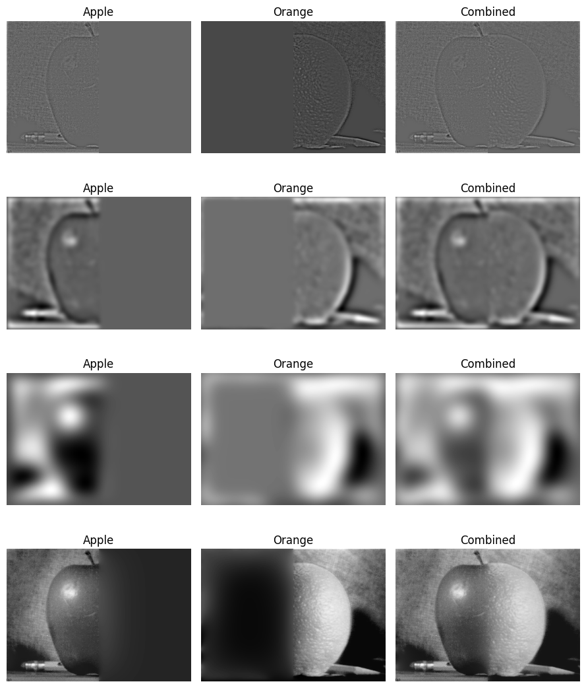
For custom blends I use a curved mask for Earth and the Moon, then two overlapping circles for the Mars/Earth blend.
The eoon looks as follows.
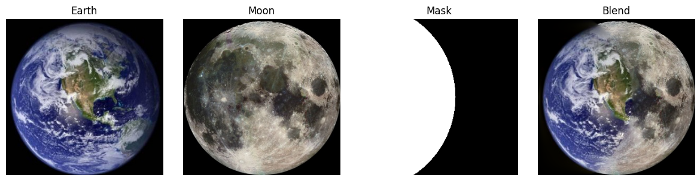
Now for the ears.
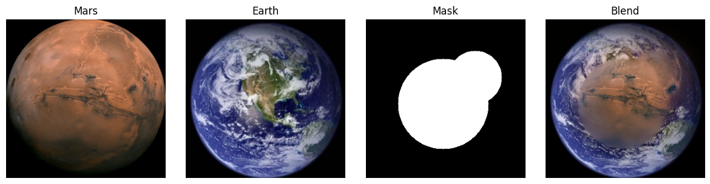
Hopefully the earth doesn't look like that in the future.
This was an interesting assignment in that it brought into perspective the application of signals analysis to computer vision applications and to the extent to which it is interlinked and dependendent on what we study in signals processing. These are the foundational elements of biological perception and taking a computational route to generate artifacts to probe how we see and understand visual data is something I had not given too much thought to before.